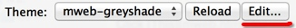

MWeb 1.2 版更新说明和用 wkhtmltopdf 生成带目录的 PDF 和自定预览 CSS
新增
- 可选择在输入时是否自动插入列表编号，可以在 Preferences --> General --> Auto insert list and blockquote prefix 开启和关闭。
- 分享功能的 Copy as image、Save as image、Save as PDF 等现在统一都用HTML的样式了，另外还专门为分享到微薄等SNS生成的图片做了优化，比如说如果有代码，会强制换行。
- 新增把文档库里的单个或多个文档导出为HTML或者PDF。使用方法为：选择要导出的文档（可多选） --> 鼠标右键 --> Export as HTML、PDF
- 新增把整个分类导出为HTML或者PDF。使用方法为：右键要导出的分类 --> Export as HTML、PDF。导出的PDF现在还没办法自动生成目录，下边的详细介绍会分享一个可以自动生成目录的方法，然后个人觉得生成的PDF非常好。
- 新增MWeb自带的两个主题octopress、greyshade的即时预览CSS。现在可以不用 Build site 就可以即时预览文章的大概效果了。另外自定网站的预览CSS非常简单，请看下边的详细介绍。
- 新增可以拖拽改变文档的顺序。使用方法为：鼠标右键父分类 --> Edit --> 把Order by设定为：Custom --> 然后就可以用拖拽调节这个父分类下的文档顺序了。
- 新增可以拖拽改变分类的顺序。
把生成的静态网站发布到github或FTP
看现在多几个人浏览，就花时间写这一篇了。
MWeb的优点是生成的网站都在你的本地电脑上，所以你可以备份、同步到Dropbox等网盘。当然也可以一键重新生成，您只需要备份好您的文档库即可。比如备份文档库到dropbox的方法为：
继续阅读 →MWeb 所有问题和回答收集
如何导出HTML样式的PDF？（1.2版已改进这个问题。）
CMD+R打开Live Preview窗口，点右边的分享按钮，选择Save as PDF即可。
如何开启MathJax预览支持？如何让网站支持MathJax？
CMD+,打开设置面板，切到Themes，勾选Enable Math选项。
如果要让网站支持MathJax，最简单的方法是在网站分类设置中的：Site other:的文本框中填入以下代码：
<script type="text/x-mathjax-config">
MathJax.Hub.Config({tex2jax: {inlineMath: [['$','$'], ['\\(','\\)']]}});
</script>
<script type="text/javascript"
src="http://cdn.mathjax.org/mathjax/latest/MathJax.js?config=TeX-AMS-MML_HTMLorMML">
</script>
如果您的网站是要用HTTPS，请把：http://cdn.mathjax.org...改为：https://cdn.mathjax.org...
自定网站或博客主题简单说明
MWeb全部主题已上传到Github: https://github.com/oulvhai/MWeb-Themes.
MWeb主题模板结构
MWeb所有网站主题模板都放在SiteThemes这个文件夹里，点击  这里可以直接显示SiteThemes文件夹，一个文件夹就表示一个主题。每个主题里包含的文档和文件夹的作用如下：
- asset -- 主题所有要用到的东西，图片、CSS、JS等等都放这里
- archives.html -- archives.html页所使用的模板
- atom.xml -- RSS所使用的模板
- category.html -- 分类所使用的模板
- footer.html -- 页面的底部
- header.html -- 页面的顶部
- page-index.html -- 自定首页模板
- page.html -- 文档选中
Is page时所使用的模板 - post.html -- 文档不选中
Is page所使用的模板 - sidebar.html -- 侧边栏的模板
- sitemap.xml -- 网站sitemap所使用的模板
自定首页
如图，设定想要设置为首页的文档的 HTML file name 为 index, 选中 Is page 选项。